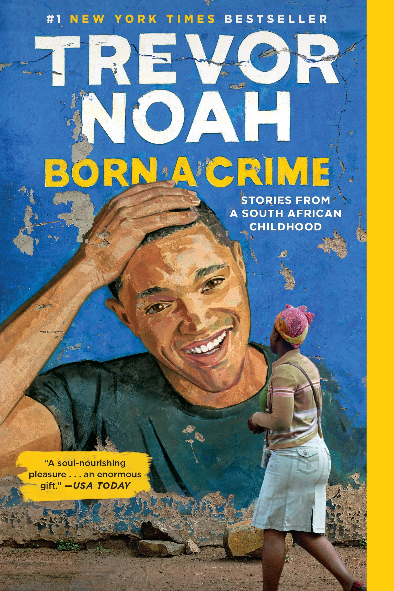
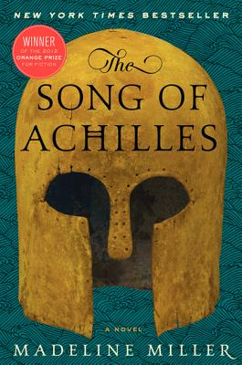
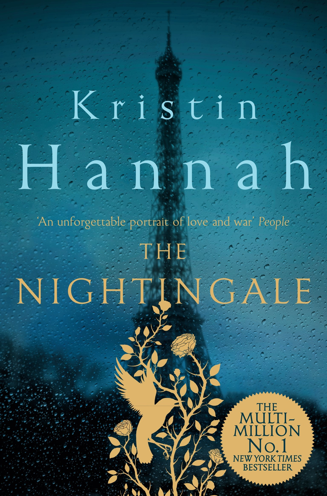
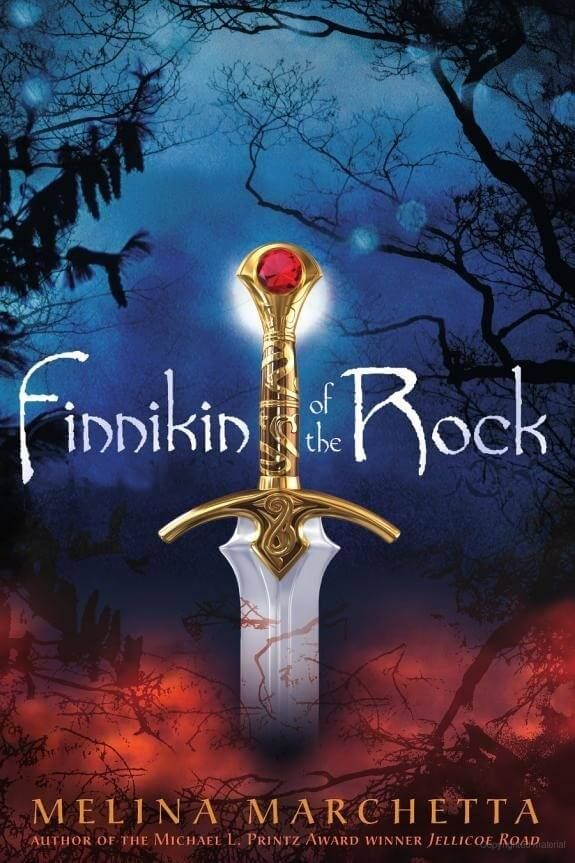
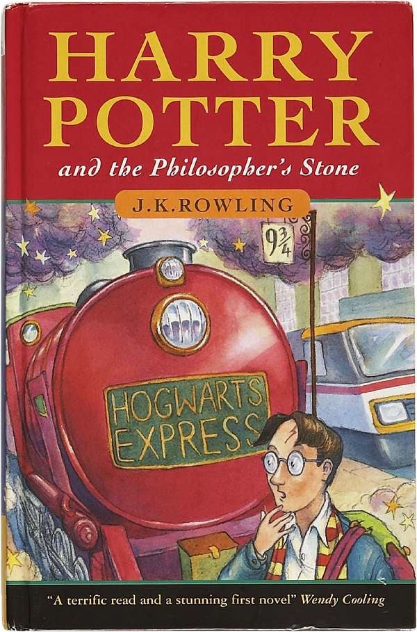

|  |
Born a Crime, by Trevor NoahTill date, this is one of my most rewarding reads in 2020. Born a Crime follows the lifestory of internationally renowned comedian Trevor Noah. Told through a series of short stories beginning from his childhood, and extending all the way to his adult life, the novel beautifully illustrates South African culture and more importantly, the experience of life during and after Apartheid. Combined with Trevor's own stories of being born as a colored child during a time it was deemed illegal, Born A Crime truly becomes a phenomenal read. Rich in detail and rampant with humour, I recommend the book to readers of all ages and levels. |
|  |
The Song of Achilles, by Madeline MillerWhen I began this book, I was already an enthusiast about Greek Mythologies and cultures; however, Achilles at the time was just a name, another hero among many in the Greek Kingdom. After reading the Song of Achilles, not only did I grasp the full depth of the hero, I also encountered one of the most beautifully portrayed characters in fiction till date: Patroclus. In this book, Madeline Miller spins the age-old myth about Achilles and Patroclus into a novel that will stay with you for a lifetime. |
|  |
The Nightingale, by Kristin HannahKristin Hannah is a magician. Because, when she writes it's as if all of her words are jumping of the page and making an entire movie right in front of your eyes. The Nightingale is a novel set in the small village of Carriveau; World War II is just on the horizon and the lives of two sisters are about to be changed forever. The Nightingale is a story of the women's war which vividly depicts how while their men were fighting away, the women had to fight in a different kind of war with equally devastating consequences. In terms of both prose and narrative, I strongly recommend reading this fantastic book. |
|  |
Finnikin of the Rock, by Melina MarchettaFor devoted readers of fantasy and fiction, reading The Lumatera Chronicles is an absolute must. It always surprises me how little readers know about this book - while reading Finnikin, the only thought that kept crossing my mind was now, THIS is how fantasy should be written! From a vastly detailed world to deep and intriguing characters, Melina Marchetta's fantasy series truly has it all. |
|  |
Harry Potter and the Philospher's Stone, by J.K. RowlingPlease read it. Just read it. The books and the movies are not the same - the books are so, so much better. |
 |
Percy Jackson and The Lightning Thief, by Rick RiordanI read the book for the first time when I was twelve. And then I kept reading it for several more years as well as all of it's nine-book-long series too. Rick Riordan's work is truely timeless - it doesn't matter if you're 9 or 90, all of his books have an equally strong appeal. Very few writers can write truly funny dialogues: in this regard, Riordan's work will make you laugh out loud and at many points simply laugh till you're in tears. I recommend this book freely to anyone who hasn't read it yet and especially if you're new to the habit of reading. |